TVV RESEARCH DIGEST — November 1, 2026 — 12 desks
1. Major Geopolitical Conflict Developments
- ★ Hormuz, Iran's offer: Foreign Minister Araghchi says the strait could reopen within two days if Washington meets Iran's conditions, after Qatari mediators shortened a seven-day plan to a two-step sequence (US steps on day one, shipping resumes on day two). The conditions include sanctions relief, release of frozen funds, restored oil waivers, recognition of a shipping route designated with Oman, a reduced US military presence and an end to attacks on Lebanon. Iranian negotiators held a third straight day of talks with Qatari mediators on Sunday; no direct US-Iran talks are planned. Investing.com/Reuters · Middle East Eye
- ★ Hormuz, competing signals: Trump says negotiations are going fine but he is not in a hurry, and renewed threats against Iran's Pickaxe Mountain nuclear site; Rubio says no decision on fresh strikes has been made. Supreme Leader Mojtaba Khamenei ordered commanders to prepare an immediate response to any attack without geographic limits, and Tehran warned invading forces would face a killing ground. Iran's says another tanker caught fire after striking mines east of Hormuz, not naming the vessel; this could not be independently confirmed. CENTCOM says its blockade of Iranian ports has redirected 144 commercial ships. Al Jazeera · AP
- ★ Ukraine, overnight Oct 31-Nov 1: Russia launched 433 drones, 64 of them jet-powered; Ukraine says it downed 371, with hits at 16 locations. One person was killed and 47 injured over the past day. Over the past week Russia used about 1,940 drones, 1,580 glide bombs and 44 missiles, 36 of them ballistic. Kyiv Independent · RBC-Ukraine
- ★ Ukraine strikes back: Ukrainian drones hit an industrial site in Kstovo, Nizhny Novgorod region, reportedly a LukOil refinery, and a chemical plant in Rostov region; Russia says it downed more than 100 drones. The six-day local ceasefire around Oleshky reached its final day, which Zelensky said shows de-escalation is possible, and the US has signaled interest in a Black Sea truce. RFE/RL · Guardian
- Taiwan, 24 hours to 6 AM Oct 31: Taiwan's defense ministry tracked 13 PLA aircraft sorties, 7 navy ships and 2 official ships, with 6 aircraft crossing the median line. CNA reports Taiwan also flagged a PLA joint combat readiness patrol, with 18 sorties crossing the median line; the two counts cover different windows. Taiwan MND · Taiwan MND press · CNA
- Oil-linked geopolitical risk: the oil-related geopolitical risk index read 752 in September, well below March's record 1,844 but above the 2003 Iraq-war (515) and 2022 Ukraine (736) readings (see graph). Iacoviello GPR
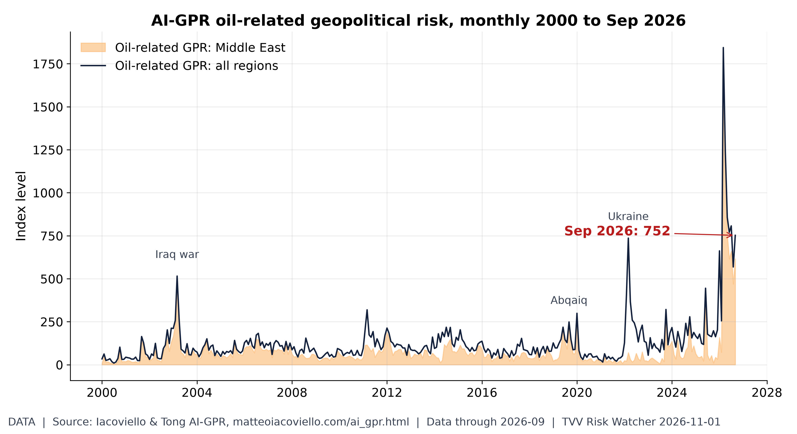
Oil geopolitical risk: off the March peak, still high. Iacoviello's oil-related AI-GPR read 752 in September, below the March 2026 record of 1,844 but above the 2003 Iraq-war (515) and 2022 Ukraine (736) readings. [Data; data as of 2026-09 (held: monthly, next update early Nov)] Source: matteoiacoviello.com data page
2. Major Terror / Security Incidents
- ★ UK, Iran-linked plot: two Iranian nationals, Salam Ahmadyan, 36, and Rahman Salehi, 34, were charged with preparing a terrorist attack on Manchester's Jewish community around Yom Kippur. Prosecutors say they were in contact with a third party who may be in Iran. The charges came a day after a separate arrest over an alleged plot targeting RAF Fairford. 24 Ore (CNN report)
- ★ US, ISIS case: Californian Ammaad Akhtar pleaded guilty on Oct 30 to attempting to provide material support to ISIS, in a case that included a plot against a man he believed was an Israeli soldier. Jerusalem Post
- ★ Lebanon: a military court charged 13 people linked to Hezbollah over a truck carrying about 780 kg of explosives that authorities had seized. Al Jazeera
- ★ Cyber, AI developer platforms: hosting platform Northflank told all customers to assume their environment variables were decrypted and to rotate every key after a breach flagged by Wiz on Oct 30; customers report unauthorized use of their stored AI API keys. Wiz counts at least nine AI developer platform breaches in October (including Fireworks AI, Lightning AI, OpenCode, Railway, Warp and Northflank); one, Zeabur, is shutting down. In two cases Wiz traced, stolen keys made about 2.5 million Amazon Bedrock calls worth roughly $100,000, with resale sites offering cheap access to frontier models. BleepingComputer · Wiz
- Cyber, ransomware: Interlock claimed an attack on Pedigo Products with 1.3 TB of data, and the Emperador group claimed building-materials maker Holcim; neither company had confirmed details in these reports. Cyware · HookPhish
- Conflict deaths in 2026: UCDP's preliminary data count 138,860 deaths from organized violence worldwide in January-September, led by Ukraine (63,789), Iran (23,681) and Nigeria (6,945) (see graph). UCDP
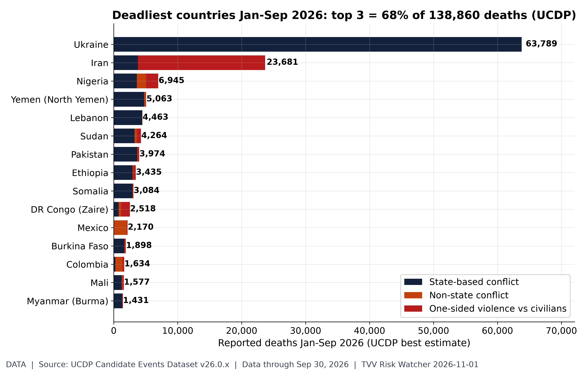
The deadliest conflict zones of 2026. UCDP candidate events Jan-Sep 2026: 138,860 deaths worldwide; Ukraine 63,789, Iran 23,681, Nigeria 6,945, Yemen (North Yemen) 5,063, Lebanon 4,463. Largest one-sided (civilian-targeted) toll: Iran 19,901. UCDP codes organized violence (state, non-state, one-sided), which includes but is not limited to terrorism; candidate data are preliminary and revised monthly. [Data; data as of Sep 30, 2026 (candidate GED v26.0.9, merged with v26.0.1-6/0.7/0.8)] Source: ucdp.uu.se data page
3. Earthquakes and Eruptions
- ★ No qualifying earthquake: the strongest recent event, an M6.0 (JMA M6.1) off Mie, Japan, at 7:15 AM local time Nov 1, was about 350 km deep, carried a USGS PAGER green alert and caused no reported damage. SeismoWatch (USGS event)
- ★ 2026 so far: USGS counts 1,722 M5+ quakes through Nov 1, against a 2016-25 average of 1,444 for the same window. Indonesia (226), the Philippines (137), Japan (106) and Vanuatu (102) are busiest; the Philippines and Vanuatu are running at more than twice their norm (see graph). USGS ComCat
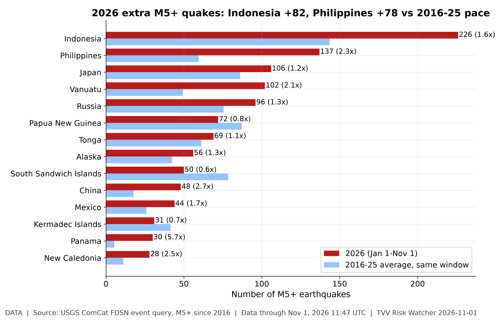
Which regions are shaking more?. USGS ComCat M5+ through 11:47 UTC Nov 1: 1,722 in 2026 vs a 2016-25 average of 1,444 for the same Jan 1-Nov 1 window. Busiest: Indonesia 226 (avg 143.5), Philippines 137 (avg 59.5), Japan 106 (avg 86.1), Vanuatu 102 (avg 49.4). Biggest excess vs normal (regions averaging 5+): Panama 5.7x, China 2.7x, Balleny Islands 2.6x. Regions are USGS place-name tails (country or named region), so offshore zones may split. [Data; data as of Nov 1, 2026 11:47 UTC] Source: earthquake.usgs.gov data page
4. Solar / Space Weather
- ★ Geomagnetic storm easing: Kp reached 6 (a G2 moderate storm) after Oct 31 from a coronal-hole high-speed stream; NOAA expects activity to fall to G1 on Nov 1, with no radiation storm or radio blackout forecast and only isolated C-class flares possible through Nov 3. NOAA SWPC forecast · NOAA SWPC events
- ★ Pole drift, weekly measured reading: the north magnetic pole moved 454 km in 2015-2025, slowing to 37 km a year in 2024-25 from a 57.6 km peak in 2010-11, as it heads from the Canadian Arctic toward Siberia; NOAA's WMM2025 projects about 33 km a year to 2030. The data show steady drift, not a timetable: no one can predict when a magnetic excursion might come. Michael Hentschel's own view is 2035 at the earliest (see graph). NOAA NCEI
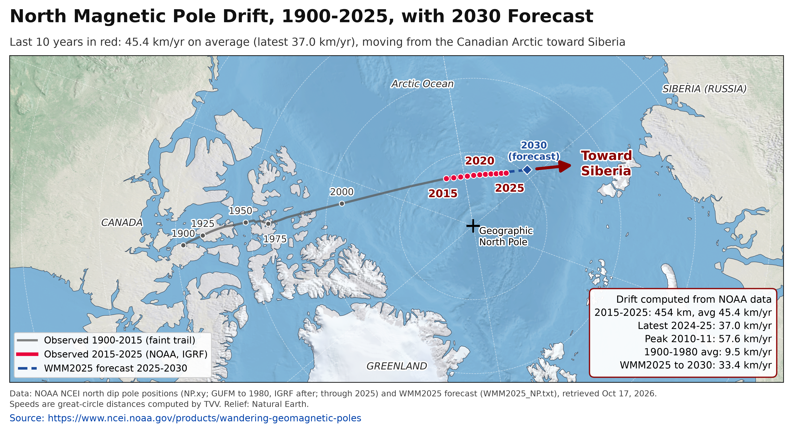
North magnetic pole drift (measured). The north magnetic pole moved 454 km in 2015-2025 (45.4 km/yr average; 37.0 km/yr in 2024-25, down from a 57.6 km/yr peak in 2010-11) as it heads from the Canadian Arctic toward Siberia; NOAA's WMM2025 forecasts about 33 km/yr to 2030. Weekly standard chart; data held at 2025 (annual NOAA series). [Data; data as of 2025 (observed, NOAA NP.xy); 2026-2030 forecast (WMM2025); retrieved 2026-10-17] Source: ncei.noaa.gov data page
5. Critical Infrastructure / Transportation Disruptions
- ★ Ukraine grid: the Nov 1 strikes hit energy facilities in Dnipropetrovsk, Vinnytsia, Zhytomyr and Khmelnytskyi regions, leaving hundreds of thousands without power, and Kyiv moved to emergency outages. Kyiv Independent · NBC News
- ★ US Southwest storms: NPR reports the Four Corners region was still under flood watches on Oct 31 with 1-3 more inches of rain forecast, after displacement, destroyed homes, rooftop rescues and at least one death in New Mexico; the Navajo Nation was badly hit. More than 5,000 Phoenix-area customers lost power in Oct 31 storms. NPR · KTAR
- ★ Energy security: Germany's gas storage industry says reserves stand at 61.35%, below the country's 80% winter target, partly reflecting war-driven energy costs. Investing.com/Reuters
- Grid bottleneck: the US producer price index for power transformers reached 185.9 in September (January 2020 = 100, up 7.8% y/y) and switchgear 170.2 (up 8.8%); since 2020 both have outpaced producer prices overall (see graph). BLS PPI via FRED
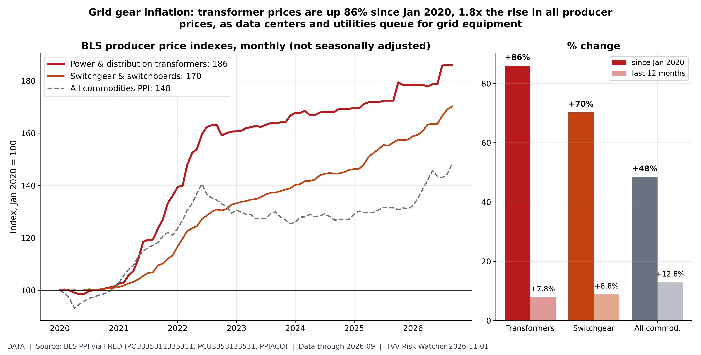
Transformer prices: the grid bottleneck. BLS PPI, power/distribution/specialty transformer manufacturing (FRED PCU335311335311) 185.9 in Sep 2026 (Jan 2020 = 100; +7.8% y/y); switchgear and switchboard apparatus 170.2 (+8.8% y/y); all-commodities PPI 148.4 (+12.8% y/y). Transformers and switchgear gate new data-center and utility hookups; since 2020 they have risen far faster than producer prices overall, a sign of a supply bottleneck, although in the last 12 months the oil shock lifted the all-commodities index faster. September data. Data-center series. [Data; data as of 2026-09 (BLS PPI via FRED)] Source: fred.stlouisfed.org data page
6. Econo-Metrics
- ★ China slips into contraction: the official manufacturing PMI fell to 49.3 in October from 50.1, with new orders at 49.4 and employment at 48.4; large firms held at 50.2 while small firms fell to 47.5, and high-tech manufacturing stayed in expansion at 51.3. NBS · Xinhua
- ★ Japan: the Bank of Japan held at 1.25% on Oct 30 but declared its 2% underlying inflation target met and raised its FY2027 inflation forecast, feeding expectations of a December hike; the yen was near 157 per dollar. CNBC
- ★ US week ahead: ISM manufacturing Monday, JOLTS Tuesday (Election Day), ISM services Wednesday and the October jobs report Friday, where FactSet consensus is 55,000 payrolls with unemployment at 4.2%, after 29,000 in September. CNBC
- ★ Permanent-type job losses: unemployed job losers not on temporary layoff reached 1.75 million in September, up 50% from September 2022 and the highest since November 2021 outside the COVID spike (see graph). BLS via FRED
- Real policy rate: effective fed funds of 3.88% against 3.7% headline CPI leaves a real rate near zero (about +1.2 points on core CPI), versus +1.21 points a year ago. FRED

Permanent-type job losses rising. BLS CPS (FRED LNS13026638) unemployed job losers not on temporary layoff 1.750M in Sep 2026, up 50% from 1.170M in Sep 2022; 2019 average 1.34M; highest since Nov 2021 outside the COVID spike. Permanent job losers 0.605M (LNS13026637); on temporary layoff (expecting recall) 0.845M (LNS13023653). No-recall job loss is the layoff type tied to restructuring, including AI-linked cuts; temporary layoffs expect recall. Jobs/Labor series. [Data; data as of 2026-09 (BLS Employment Situation)] Source: fred.stlouisfed.org data page
7. Epidemic / Bio-Metrics
- ★ Ebola, DRC: ebola-tracker counts 10,414 confirmed cases and 5,372 deaths as of Oct 30. Reported death tolls differ by source and definition: SitRep 168 (situation Oct 29) listed 5,026 deaths among confirmed cases, while WAM reports 5,340. Beni has become the main hotspot in Nord-Kivu with 711 confirmed cases and 532 deaths. ebola-tracker · WAM · CongoRassure
- ★ Bird flu in dairy cattle: Colorado confirmed its first dairy H5N1 detection since 2024, in Weld County, found by routine bulk milk testing (B3.13 strain), and quarantined the herd. Washington's agriculture department lists 34 infected herds confirmed Oct 8-29, 33 of them in Yakima County; some reports cite 30 (see graph). Colorado Dept. of Agriculture · WSDA
- Bird flu in marine mammals: a dead common dolphin at Encounter Bay, South Australia, tested positive for H5, bringing the state's total to 340 detection events; no poultry or livestock cases were reported there. ABC News Australia
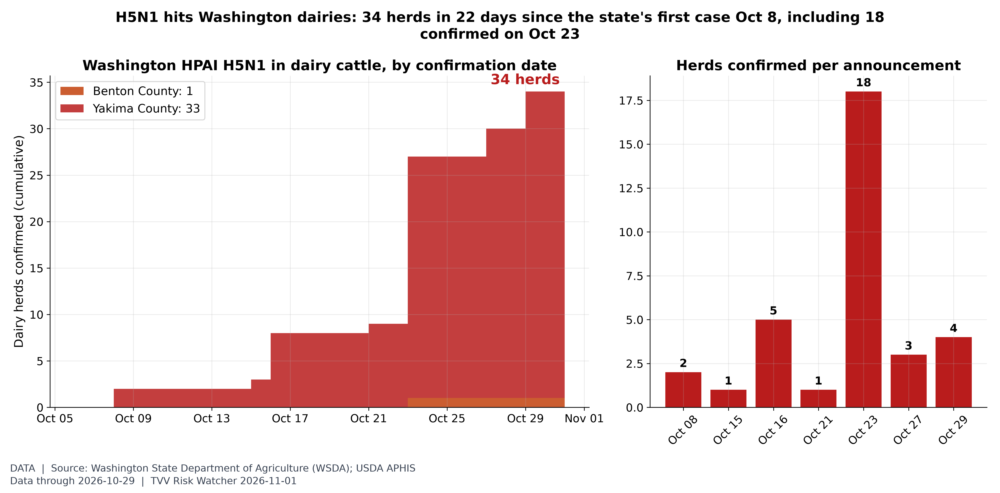
Washington bird flu in dairy herds. Washington State Dept. of Agriculture table of HPAI H5N1 in cattle: 34 dairy herds confirmed Oct 8-29 (Benton 1, Yakima 33); largest batch 18 herds on Oct 23. USDA APHIS called the Oct 8 Yakima cases Washington's first HPAI in livestock; WSDA reports sequencing shows the cow-adapted B3.13 strain, with no evidence of mammalian adaptation or human-to-human spread. Hong Kong CHP's Avian Influenza Report (wk 42) lists a US human H5N1 case reported by Washington State DOH on Oct 15. SV.2.4 check Nov 1: WHO (Oct 7 interface report), CHP wk 42, Taiwan CDC (poultry H5N1 only, latest Oct 27) and China (last H5N6 case Apr 16) show no new Asian human H5N1 cluster, so no separate SV.2.4 chart. [Data; data as of 2026-10-29 (WSDA table, read Nov 1)] Source: agr.wa.gov data page
8. Gold and Silver and Commodities
- ★ OPEC+ holds: the seven core OPEC+ producers met on Nov 1 and kept December output at September's required levels; the next meeting is Nov 29. Brent settled at $117.64 and WTI at $104.12 at Friday's close. OPEC
- ★ Gas gap: Europe paid $25.42 per MMBtu for natural gas in September against $2.95 for US Henry Hub, a ratio of 8.6 times, the widest since March 2022, because Gulf LNG must pass Hormuz (see graph). World Bank Pink Sheet
- ★ Metals into the week: spot gold is $3,876 and silver $49.25 with markets closed for the weekend; GLD is 28.3% below its Jan 29 high, and copper is about $6.54 per pound after a record September average of $14,474 a tonne. gold-api.com · Nasdaq GLD · World Bank
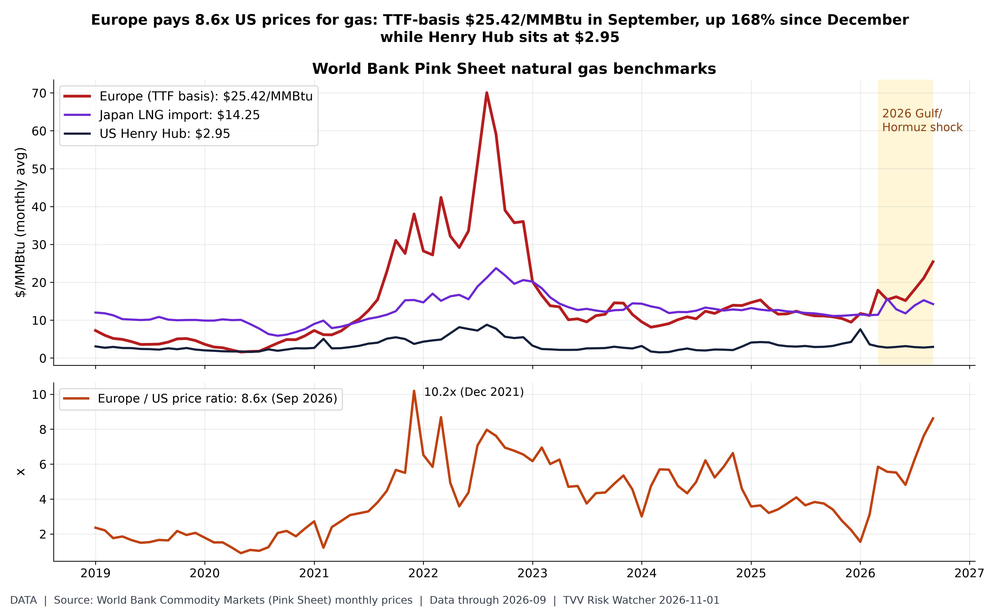
Gas: Europe vs America. World Bank Pink Sheet monthly averages, Sep 2026: natural gas Europe $25.42/MMBtu (Dec 2025 $9.48), Japan LNG $14.25, US Henry Hub $2.95; Europe/US ratio 8.6x, highest since Mar 2022 (2022 crisis peak 10.2x in Dec 2021). Brent averaged $116.8/bbl in September. Gulf LNG (Qatar) ships through Hormuz, so Europe and Asia carry the supply risk; the US is insulated by domestic gas. Commodities beyond metals for desk 8; October data due early November. [Data; data as of 2026-09 (World Bank Pink Sheet, Oct release)] Source: worldbank.org data page
9. Stock Averages and Nasdaq Major Movers
- ★ Week of Oct 26-30 by sector: health care (+3.1%), materials (+2.8%) and utilities (+2.0%) led, while communication services (-5.3%), bitcoin (-5.7%) and silver (-8.5%) lagged; the S&P 500 fell 0.6% and the Nasdaq-100 2.0% (see graph). Nasdaq.com
- ★ Weekend crypto: bitcoin traded near $77,750 on Sunday morning, after a 5.7% drop last week. Coinbase
- ★ Risk setup: BTIG warns the S&P 500 may test its 200-day average near 7,306. The week brings 138 S&P 500 reports, including Apple and Palantir Monday, AMD, Arista and Super Micro Tuesday, and Qualcomm, Uber and AppLovin Wednesday. Since 1934 the Dow has gained an average 2.8% in the eight trading days around midterm elections, per the Stock Trader's Almanac. CNBC
- Tail-risk gauges: Cboe SKEW closed at 149.8 on Oct 30 and VVIX at 106.4, below its 2026 high of 140.4. Cboe
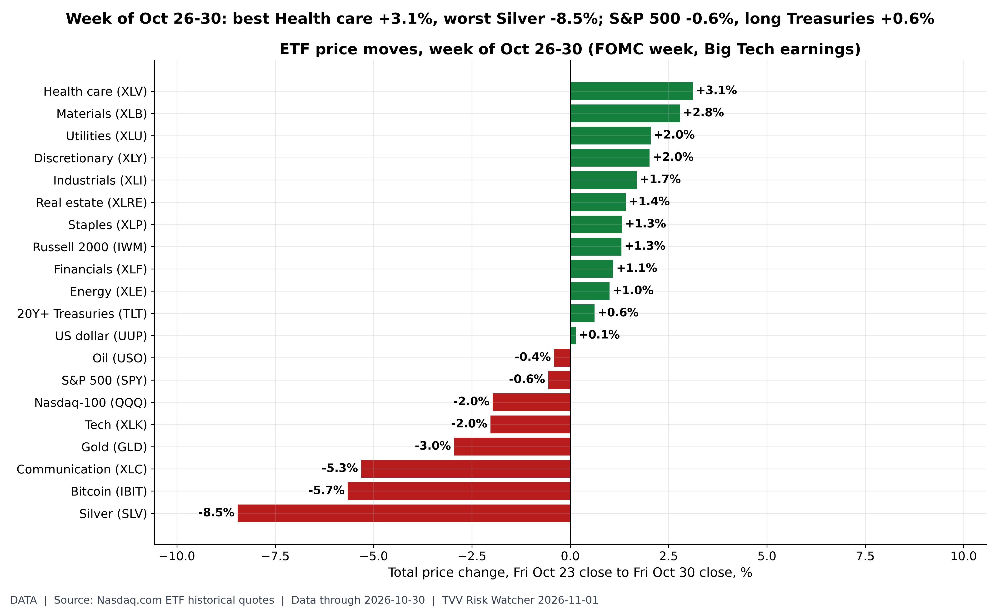
The week on the tape. Weekly price change Fri Oct 23 to Fri Oct 30 close (Nasdaq.com ETF history): Health care +3.1%; Materials +2.8%; Utilities +2.0%; Discretionary +2.0%; Industrials +1.7%; Real estate +1.4%; Staples +1.3%; Russell 2000 +1.3%; Financials +1.1%; Energy +1.0%; 20Y+ Treasuries +0.6%; US dollar +0.1%; Oil -0.4%; S&P 500 -0.6%; Nasdaq-100 -2.0%; Tech -2.0%; Gold -3.0%; Communication -5.3%; Bitcoin -5.7%; Silver -8.5%. Week included the Oct 28 FOMC decision and Big Tech Q3 reports; Apple reports Nov 2, midterms Nov 3. ETF prices exclude dividends. [Data; data as of 2026-10-30 (Friday close)] Source: nasdaq.com data page
10. Polymarket and Kalshi Sentiment Highlights
- ★ Iran: Polymarket's US-Iran ceasefire through the midterms rose to 94.5% from 89.5% on Saturday as Iran floated its two-day Hormuz plan; Hormuz traffic back to normal by Dec 31 is still only 11.5%. Polymarket ceasefire · Polymarket Hormuz
- ★ Midterms, two days out: Democrats are 94.5% to win the House and 72.5% for the Senate, up from 70.5% on Saturday. Polymarket House · Polymarket Senate
- ★ Rates and growth: a 25 bp Fed hike in December is 70.5%; a US recession by end-2026 is 5.5%; Polymarket gives the 30-year Treasury yield 85% odds of hitting 5.40% by Dec 31 and the 10-year 29% odds of 5.3% (see graph). Polymarket Fed December · Polymarket recession · Polymarket 10Y
- Ukraine: a Russia-Ukraine ceasefire by Dec 31 is 13.5% and by Mar 31, 2027 is 36.5%. Polymarket Ukraine ceasefire
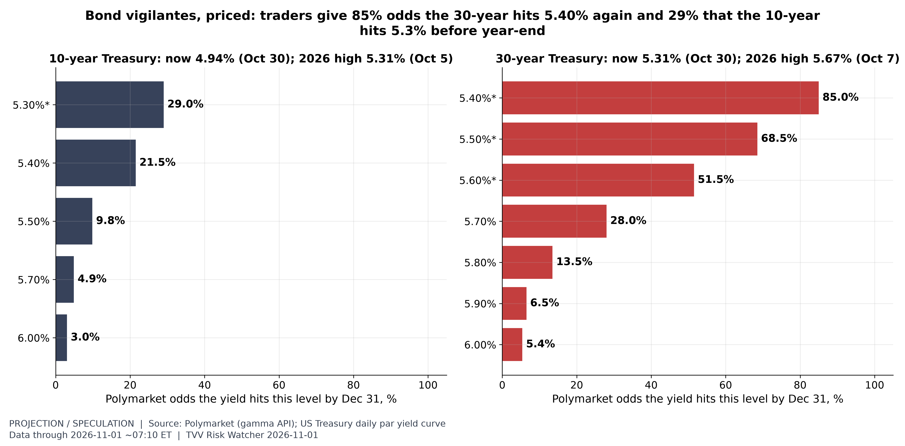
How high can yields go by year-end?. Polymarket (~7:10 AM ET Nov 1), open 'hit by Dec 31' strikes: 10-year 5.3% 29.0%, 5.4% 21.5%, 5.5% 9.8%, 5.7% 4.9%, 6.0% 3.0%; 30-year 5.40% 85.0%, 5.50% 68.5%, 5.60% 51.5%, 5.70% 28.0%, 5.80% 13.5%, 5.90% 6.5%, 6.00% 5.4%. Treasury par yields Oct 30: 10Y 4.94%, 30Y 5.31%; 2026 daily highs 10Y 5.31% (Oct 5), 30Y 5.67% (Oct 7). Strikes marked * were re-listed Oct 23 and count only from then (original strikes up to 10Y 5.3% and 30Y 5.65% already resolved Yes; since Oct 23 the highs are 10Y 5.05%, 30Y 5.37%). Event volume $1.1M (10Y) and $0.28M (30Y). Market odds are crowd prices, not forecasts. [Projection; data as of 2026-11-01 ~07:10 ET (Polymarket); Treasury par curve 2026-10-30] Source: polymarket.com data page
11. Tech-Metrics
- ★ Microsoft buyouts: Microsoft is offering voluntary exit packages to about 60,000 employees, roughly a quarter of its staff, in Canada, India, the UK and the US. Xbox, Windows, Copilot and Finance are fully included, while data centers, sales, cybersecurity and quantum computing are excluded; Microsoft says AI is not driving the offer. Silicon Report
- ★ Apple's baseline before Monday: SEC filings show June-quarter revenue of $109.4 billion (up 16.4% y/y) and net income of $29.8 billion; fiscal 2026 revenue through three quarters is $364.4 billion, up 15.8% (see graph). CNBC notes BofA removed Apple from its US1 list on Friday, citing margin risk from a staggered iPhone launch. SEC XBRL · CNBC
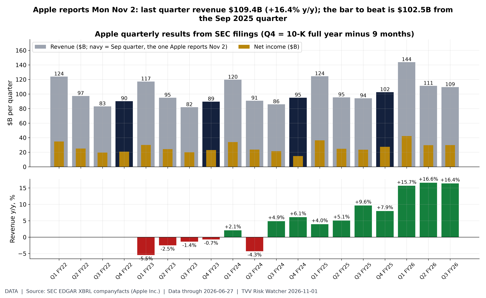
Apple into its Nov 2 report. Apple 10-Q/10-K XBRL (SEC companyfacts): June-quarter 2026 (Q3 FY26, ended Jun 27) revenue $109.4B (+16.4% y/y), net income $29.8B. Fiscal 2026 to date (3 quarters) $364.4B vs $314.6B a year earlier (+15.8%). Sep 2025 quarter (Q4 FY25, derived) revenue $102.5B, net income $27.5B. Apple reports the Sep quarter (Q4 FY26) Mon Nov 2 after the close. [Data; data as of 2026-06-27 (Q3 FY26 10-Q); Q4 FY26 due Nov 2] Source: sec.gov data page
12. AI Hypergrowth Risks
- ★ AI-linked restructuring: Pipedrive proposed the largest restructuring in its history, affecting most of its roles across locations, saying AI has changed how customers discover software while denying it is using AI to replace people. ERR reports 70% of its Estonian workforce is affected, including 219 jobs in Tallinn and 48 in Tartu. AI Replaced Me (citing ERR)
- ★ Software hiring: Indeed's software development postings index stood at 80.8 on Oct 23 (February 2020 = 100), 65% below its 2022 peak, though up 23.8% y/y; all postings were 103.7. Indeed via FRED
- ★ AI debt stack: Oracle carried $125.3 billion of notes and loans against $36.4 billion of cash at Aug 31, and CoreWeave $35.6 billion of debt against $5.5 billion of cash at Jun 30; both report large contracted backlogs ($664 billion and $103.7 billion), which are revenue promises, not cash (see graph). SEC filings (Oracle)
- Neocloud drawdowns: at Friday's close CoreWeave was 70% below its June 2025 high and Oracle 62% below its September 2025 high, against a 9.1% drawdown for the Nasdaq-100. Nasdaq.com
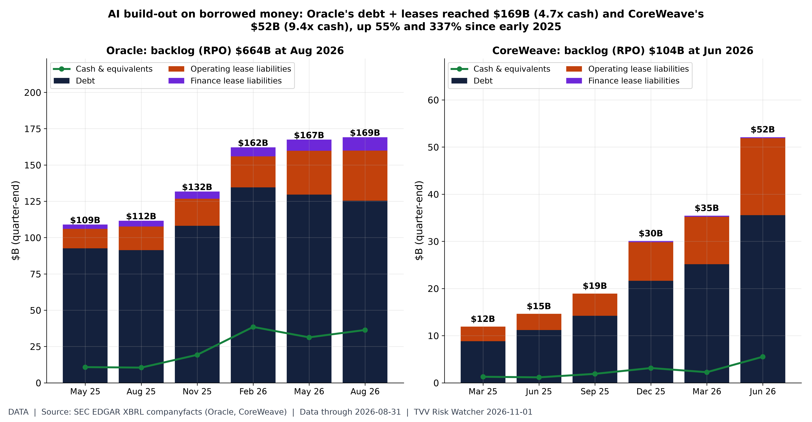
Oracle and CoreWeave: the AI debt stack. SEC XBRL quarter-end balances. Oracle (Aug 31, 2026, Q1 FY27 10-Q): notes and loans $125.3B, operating leases $34.6B, finance leases $9.2B, cash $36.4B, remaining performance obligations $664B. CoreWeave (Jun 30, 2026, Q2 10-Q): debt carrying amount $35.6B, operating leases $16.3B, cash $5.5B, RPO $103.7B. Totals rose from $109B and $12B at May 2025/Mar 2025. Backlog is contracted revenue, not cash; signed-but-not-commenced leases are excluded. Data-center financing series. [Data; data as of 2026-08-31 (Oracle); 2026-06-30 (CoreWeave)] Source: sec.gov data page